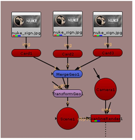
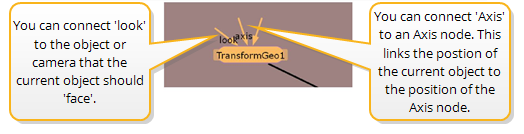
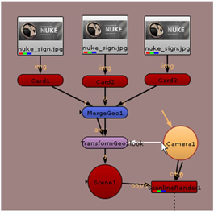

您可以合并对象并将它们作为一个组一起移动。为此，需要在对象后插入 MergeGeo 和 TransformGeo 节点。MergeGeo 节点首先将对象合并在一起，之后您可以使用 TransformGeo 节点的控件在 3D 空间中移动合并的对象。您还可以使用 TransformGeo 节点来约束对象，这在本教程的后面部分中可能会注意到。
要将三个 card 对象合并在一起，请在 Card1 节点上单击鼠标右键，然后选择 3D > 修改 > MergeGeo 。这将在 Card1 和 scene1 之间插入 MergeGeo 节点。断开 Card2 和 Card3 节点与场景节点的连接，并将它们连接到 MergeGeo 节点。然后，右击 MergeGeo 节点并选择 3D > 修改 > TransformGeo 。您的节点树现在应该如下所示:

在 TransformGeo 节点上，可以看到多个连接器。没有标签的连接器应附着到几何对象或 MergeGeo 节点。其他连接器充当连接对象位置的约束。

当相机或对象连接到可选的 看 连接器，TransformGeo 节点调整旋转，以便对象的 z 轴始终 “指向” 相机或对象。
的 轴 连接器可用于将当前对象链接到称为轴节点的特殊 3D 对象的位置、旋转和缩放。如果你使用过其他 3D 应用程序，你知道轴节点是 “空” 或 “定位器” 对象。
您仍在使用 “设置 3D 系统” 节点树。以下步骤展示了如何移动合并的节点，以及如何让对象 “看” 相机和其他对象。
| 1。 | 单击 TransformGeo1 节点将其选中。它的控制面板也应该是打开的，你会在查看器中看到它的变换手柄。 |
| 2. | 拖动手柄以移动与 MergeGeo 节点合并的所有卡。 |
| 3. | 按下 Ctrl 或 命令 键并拖动环以将卡作为一组旋转。 |
| 4. | 在 TransformGeo1 控制面板，拖动 均匀刻度 滑块以增加整组卡片的大小。 |
| 1。 | 拖动 看 连接器从 TransformGeo1 节点到 Camera1 节点。 |

在查看器中，您现在将看到 TransformGeo1 节点被约束到相机的位置。
| 2. | 选择并移动 Camera1 在查看器窗口中。当你这样做的时候，三张牌由 TransformGeo1 节点旋转以 “查看” 相机位置。 |
为什么这有用？让我们假设你有一个 2D 哑光绘画映射到场景中的一张卡片。“外观” 选项确保绘画的平面始终面向相机，而不管相机的位置如何，并保持绘画所描绘的错觉。
在继续之前，断开 TransformGeo 节点的 看 相机的连接器。
|
|